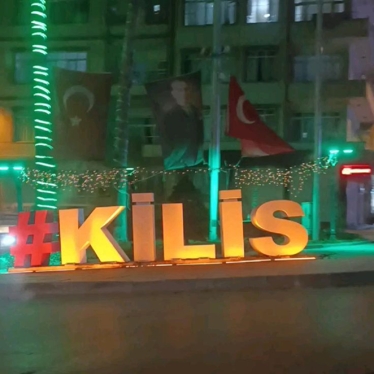
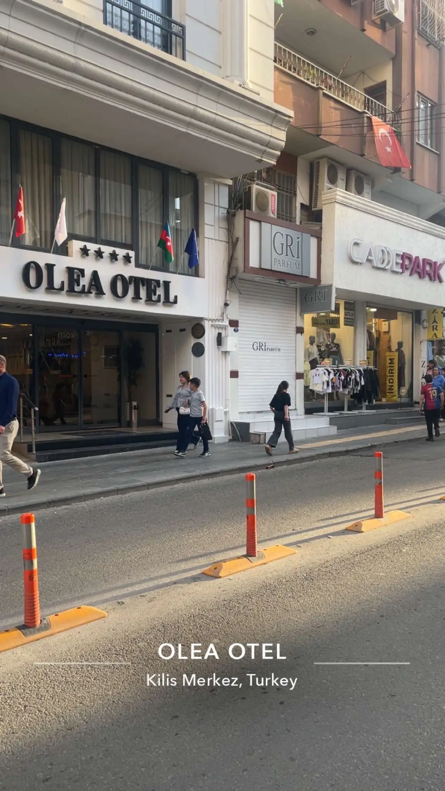
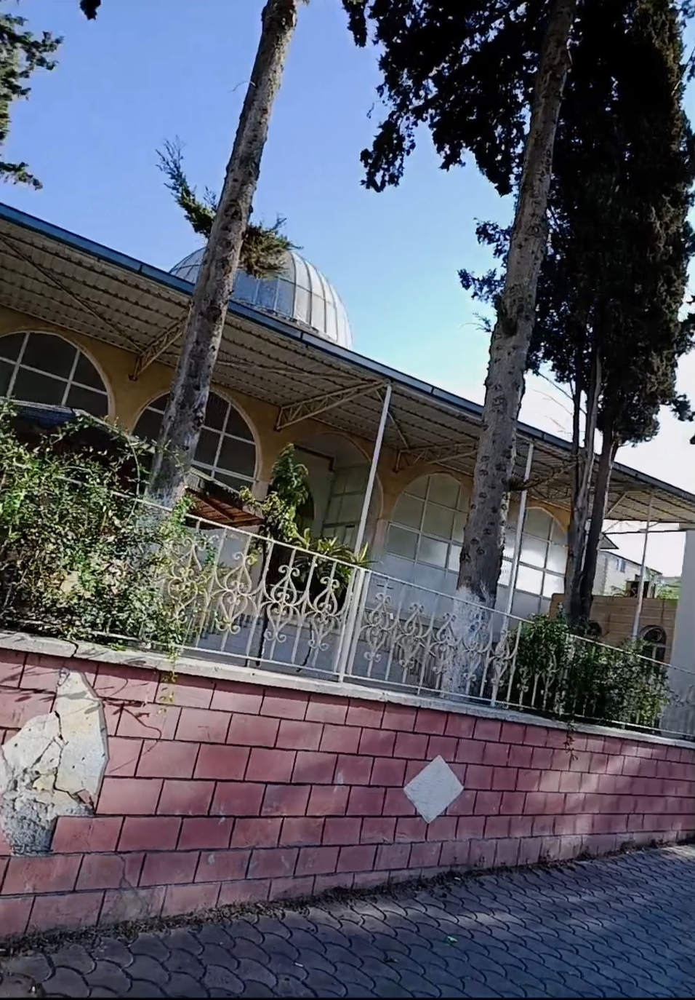

Şehri Fotoğraflarla Keşfet
Kilis; tarihi yapıları, geleneksel evleri, doğal güzellikleri ve kendine özgü şehir dokusuyla fotoğraflanacak birçok farklı noktaya sahip.
GÖRSEL ARŞİV
< class="gallery">
Kilis'ten Kareler
Şehrin farklı noktalarından seçilmiş fotoğraflar.

KİLİS
Şehrin Kalbinden

ŞEHİR DOKUSU
Kilis'ten Bir Kare

KÜLTÜR
Kilis'in İzleri

KEŞFET
Kilis'in Farklı Bir Yüzü
KİLİS'İ KEŞFET
← Ana Menü
Bir Fotoğraf, Bir Hikâye.
Kilis'in tarihi sokakları, geleneksel yapıları ve doğal güzellikleri şehrin geçmişinden günümüze uzanan hikâyesini yansıtıyor.